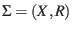
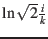
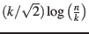

#24: Geometric Set Cover-0
The purpose of this lecture is to cover a few classic combinatorial optimization problems, including set cover, hitting set, and independent set, in a geometric context. Though the optimal set cover and hitting set problems are NP-hard, results from -nets help to give good approximation bounds for these algorithms for simpler set systems that arise in a geometric context.
The notes begin with some preliminary definitions of the dual range space and of the algorithms, and several results from -nets are reviewed. Then, a modified, weighted version of an -net is presented which leads to an approximation algorithm for the hitting set and set cover. After this, a new randomized hitting set algorithm with better bounds is presented, which was discovered by our very own T.A. Jiangwei Pan and professor Pankaj Agarwal. Finally, some basic ideas for independent set are shown in a geometric context
Throughout, I also highlight several open problems that were mentioned in class.
Let  be a range space on the set . Then
is the dual range space associated with
In other words, the space becomes the set of ranges, and the ranges become sets of ranges that hit an . A slightly easier conceptualization of a range space for this purpose is a bipartite graph, where one set is the elements in and the other set is the ranges, and there's a line between and if . The dual range space simply switches the roles of the two sets in the graph. Figure 1 shows an example with this construction.
Note also that if one constructs an incidence matrix for the range space out of this bipartite graph, then represents an incidence matrix for the dual range space. This makes the transpose symbol a natural choice for denoting the dual range space.
One way to visualize dual range spaces in a geometric context is with points and rectangles. Define the following objects:
In other words, for each rectangle, create a range comprised of the points that are contained within that rectangle
In other words, for each point, create a range out of the set of rectangles that contain it
Figure 2 shows an example of such a space.
For the range space , is a hitting set of if
For the range space
,
 is a set cover of if
is a set cover of if
Note that the hitting set of a range space is the same as a set cover of . The goal is to find the smallest sized hitting set or set cover. Note also that the hitting set is closely related to an net. To see this, recall the definition of an net
is an net of if
If in the definition of the the -net, where for the ranges space , then the -net is certainly a hitting set for all of the ranges, because every range has size at least 1. Though the is quite small in this case, and it is only related to , not to the optimal sized hitting set. Still, if one can improve the bound on , -nets may be useful for set systems of bounded VC-dimension because of the following theorem
Thus, the hope is to come up with better approximation algorithms for simple set systems using this theorem. As an example of where this may be useful, return to the ranges space with points and rectangles in Section 2.2. In fact, for this range space, an even better bound of size has been shown recently in [AES10], while the -net of the dual range space is still with constant probability.
As a side note, this implies that there is actually a gap in the bounds for computing set cover and the hitting set if -nets are used for the approximation.
As mentioned before, the goal is to somehow reduce the hitting set to an -net. The main issue with the -net is that it is only guaranteed to cover heavy (high cardinality) ranges, but the hitting set requires all ranges to be covered, so before had to be set to a very small value . To make this more convenient for the hitting set application, modify the definition of an -net to include weights for each element, so that small sets can effectively be given larger weights:
For a range set , define a map
And extend this maps to sets so that
Then is a weighted -net of if
Also say that is -light if
Use this modified definition to devise an algorithm that estimates the weights for a range space that will lead to a good hitting set approximation with an -net. The algorithm is as follows:
The algorithm is very simple, but the analysis requires some tricks. To analyze this algorithm, let be after iterations. Find an upper bound and a lower bound for . Also let be an optimal hitting set algorithm of size .
Since all of the weights start off at 1, . Thus, the upper bound is
Let
(spread the changes out evenly), and let
. Then
over , because
,
,
, and they are both convex functions. Also, each group of iterations after the first (for  ), it is also true that the minimum is achieved by spreading the elements out. Therefore, the lower bound over all elements doubled in weight is
), it is also true that the minimum is achieved by spreading the elements out. Therefore, the lower bound over all elements doubled in weight is
To get involved in the upper bound, let
, a choice which will become clear in a moment. Then
Since ,
Now combine the lower bound and the upper bound on
In this step it is clear how clever the choice of is (it allows us to subtract  from both sides of the inequality while maintaining a nonzero factor of on the left side)
The analysis so far has assumed the size of the optimal hitting set , is known, but that information is not actually available up front. To estimate , pick start with a small value of (say 1), and do an exponential binary search, doubling if the algorithm above doesn't converge in  steps.
When the algorithm finally terminates, the -net of the weighted range space is an of the optimal hitting set of the ranges. In practice, to transform the weighted -net to an unweighted -net so that ordinary -net algorithms can be run, simply replicate the elements in by their weights (this is why it was important that be positive integer weights).
Let be the number of indices
where
 . Then a -net of the weighted range space
, is an approximation of the optimal hitting set. More details can be found in [AP14], particularly in Section 4 of that paper.
. Then a -net of the weighted range space
, is an approximation of the optimal hitting set. More details can be found in [AP14], particularly in Section 4 of that paper.
The independent set problem asks for the largest set system such that each set is pairwise disjoint. This problem appears to be harder than hitting set and set cover to approximation. In particular, for some independent sets of size , the best known polynomial approximation algorithm returns a set system within size of the optimal.
One geometric example is, given a set of axis-parallel rectangles , find the largest subset
 such that
. An example is shown in Figure 3. An application of this example is to figure out how many city labels it is possible to display on a map without too much clutter (reduce to this problem by putting a bounding rectangle around each city label).
such that
. An example is shown in Figure 3. An application of this example is to figure out how many city labels it is possible to display on a map without too much clutter (reduce to this problem by putting a bounding rectangle around each city label).
With the simpler example where all rectangles are unit-sized squares, a constant-factor approximation is possible with a simple greedy algorithm which takes a random square and removes the squares that intersect it, and repeats until there are no pairwise intersections. To extend this to squares of different sizes, do the same, but choose the squares to check in increasing order of size.
For rectangles, a approximation is possible with the following greedy algorithm:
It is also possible to approximate this problem by formulating it as an integer linear programming and then rounding, but this is slower.
This document was generated using the LaTeX2HTML translator Version 2008 (1.71)
Copyright © 1993, 1994, 1995, 1996,
Nikos Drakos,
Computer Based Learning Unit, University of Leeds.
Copyright © 1997, 1998, 1999,
Ross Moore,
Mathematics Department, Macquarie University, Sydney.
The command line arguments were:
latex2html -split 1 Notes_lec22
The translation was initiated by Chris Tralie on 2014-12-10